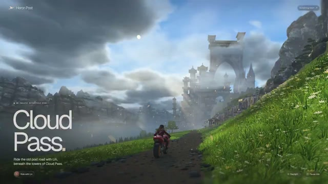

Cloud Pass 無限騎行：Three.js 魚眼、視差與粒子天空三項 Agent 技能
一句話摘要
Meng To 分享 Cloud Pass 無限騎行作品及三份 Three.js 技能文件，分別處理視差場景、主體鎖定的魚眼推拉鏡頭，以及受光照影響的粒子與雲層；本次僅讀取公開文件，沒有安裝、執行技能或測試作品。

來源與作品
Threads 分享者 @prompt_case 描述山路騎行、拖曳環視、滾輪拉闊鏡頭及日夜雲層；這些是分享者描述，未由本次互動實測。作者續文提供 Meng To 的 X 原帖及三份技能連結。Meng To 在原帖自述使用 GPT-6.2 Astra 建立 Three.js 作品，並將他人作品列為靈感；模型與製作過程屬作者自述，非本次獨立驗證。原帖正文經第三方 FxTwitter 公開鏡像讀取，X 網頁本身未能開啟。
- 原始分享：https://www.threads.com/share/BAcdQ-TBMF
- Threads 主文：https://www.threads.com/@prompt_case/post/DgOjnvgDaJ4
- 作者續文：https://www.threads.com/@prompt_case/post/DgOjzGpnCqs
- Meng To 原帖：https://x.com/MengTo/status/2125995984400654658
- 原帖提及的靈感：https://x.com/hi_personality/status/2123931908027646007
- 作者連出的作品：https://threeui.com/cloud-pass
三個技能的實際內容
以下根據 2026-11-27 檢視的公開 GitHub commit 3a8517e09e9a258a8b8a1dfdb71579abe75f1c22，均為文件設計與檢查建議，不代表已實際執行或驗證效果。
- endless-riding-parallax：以累積距離同步道路、輪胎接觸與路邊物件，回收有限路段實例，讓遠景依深度形成視差；建議檢查遠近標記的相對位移與循環接縫。https://github.com/MengTo/Skills/blob/3a8517e09e9a258a8b8a1dfdb71579abe75f1c22/agent-skills/3d/endless-riding-parallax/SKILL.md
- scroll-fisheye-dolly-zoom：將滾輪、觸控縮放及鍵盤映射到寬度控制，配合相機距離與視野變化維持主體構圖，再做以主體為中心的魚眼扭曲；建議比較主體像素尺寸並確認可回復。https://github.com/MengTo/Skills/blob/3a8517e09e9a258a8b8a1dfdb71579abe75f1c22/agent-skills/3d/scroll-fisheye-dolly-zoom/SKILL.md
- ride-particles-and-clouds：固定數量的實例粒子依道路距離循環、沿地形調整高度並在邊界淡化；雲密度採世界或天氣座標，粒子與雲共享太陽與天氣狀態；檢查深度遮擋及不同光線。https://github.com/MengTo/Skills/blob/3a8517e09e9a258a8b8a1dfdb71579abe75f1c22/agent-skills/3d/ride-particles-and-clouds/SKILL.md
三份文件均附帶數值檢查腳本的指示；本次沒有執行這些腳本。技能文件是可供 agent 參考的程序，不保證任何 agent、模型或作品必然達到同樣品質。應先審閱第三方指示及所要求的權限、依賴和外部資料流，再決定是否使用。
授權與素材邊界
倉庫根目錄 LICENSE 是 MIT License，版權聲明 Copyright (c) 2026 Meng To；複製或散布軟體及其實質部分時須保留版權與許可聲明，並有不提供保證的條款。該倉庫授權不自動證明 Cloud Pass 展示畫面、影片、第三方素材或原靈感作品均可依 MIT 重用。
LICENSE：https://github.com/MengTo/Skills/blob/3a8517e09e9a258a8b8a1dfdb71579abe75f1c22/LICENSE
圖為主帖影片公開壓縮首格，640×360，已檢視；未見真人或明顯個資。它不是完整影片，也不是獨立上傳照片。原作畫面與貼文素材重用授權未確認；本次未觀看完整影片，亦未安裝、執行技能或其檢查腳本。來源記錄另存知識庫 source-archive。